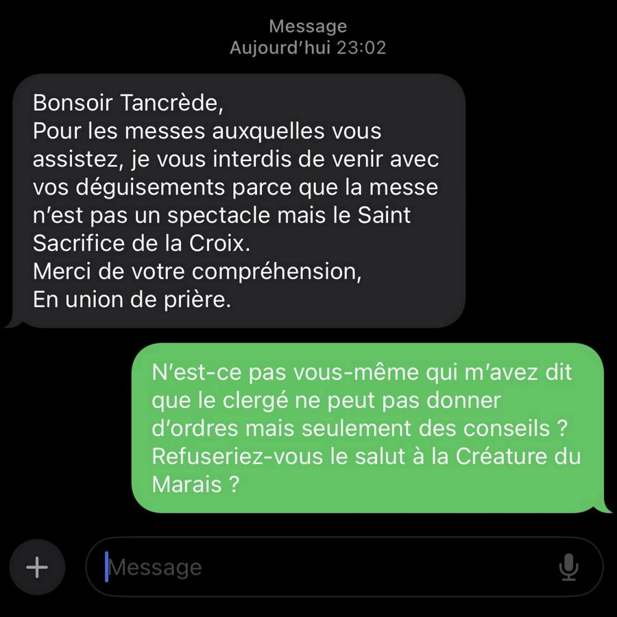
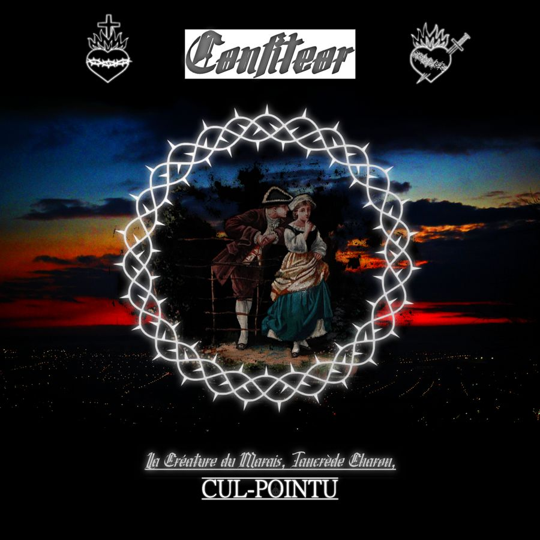
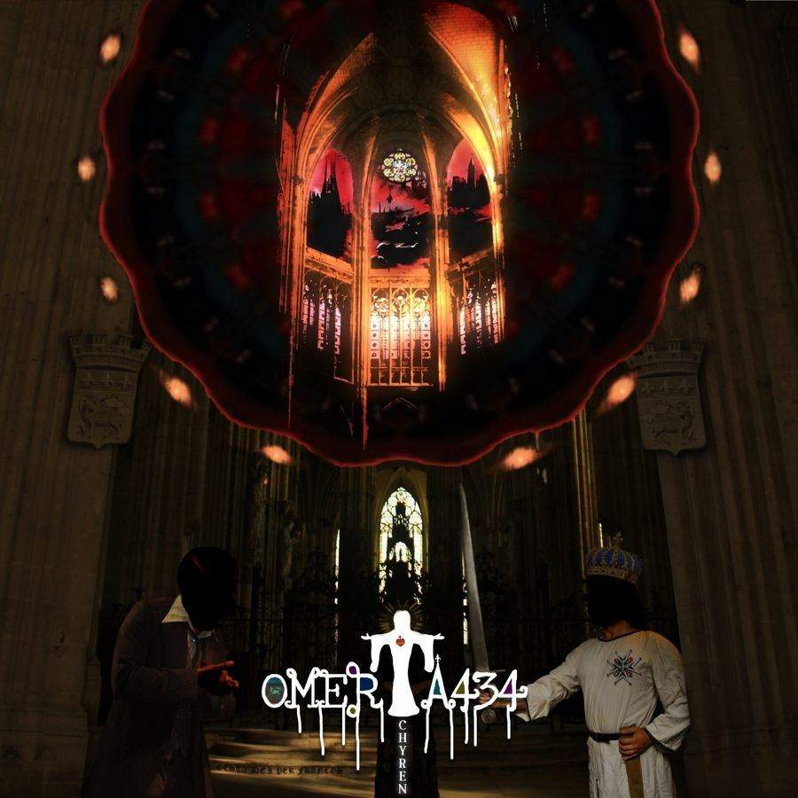
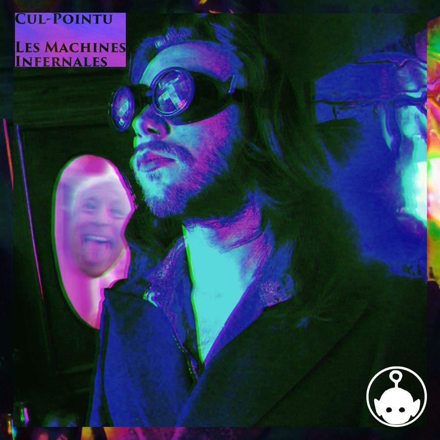
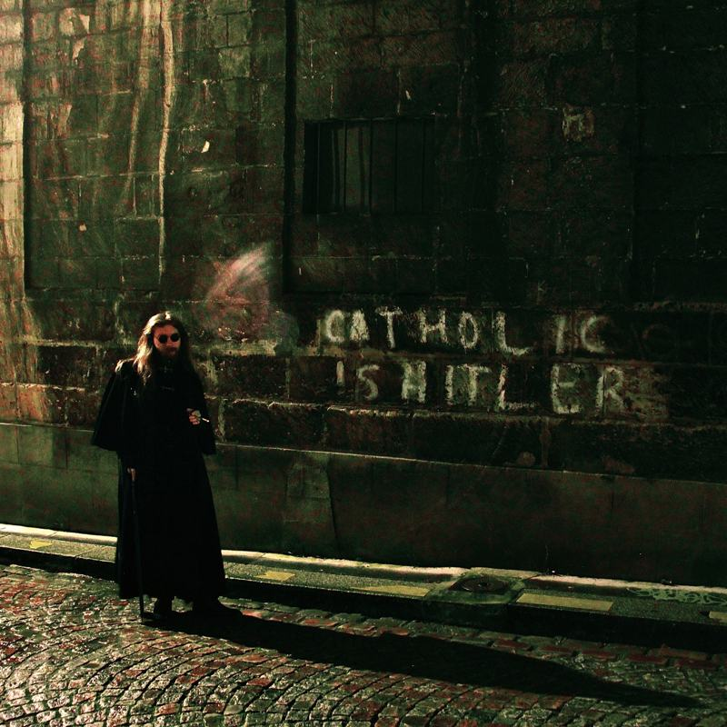
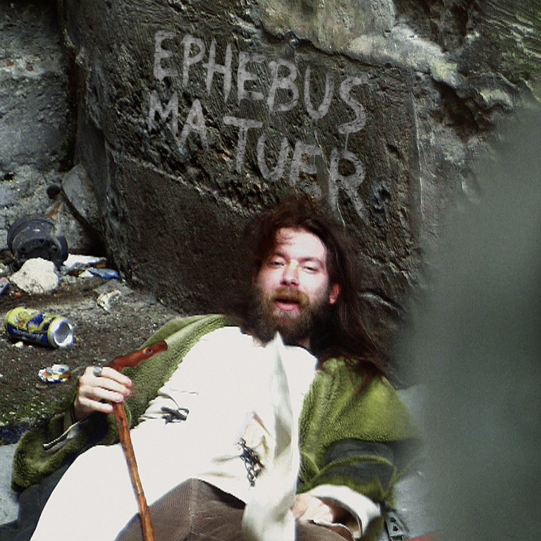
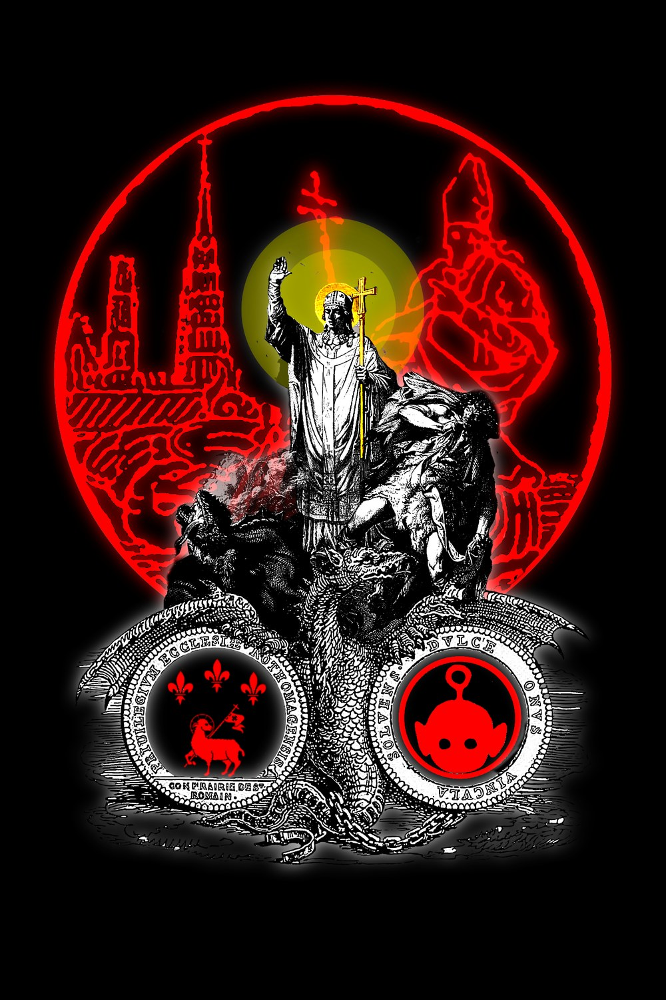

Il y a des choses qui puent à Rouen
Photos du tournage de « Misérables », second single du prochain album In Odium Fidei de la Créature du Marais. Entre les fêtes Jeanne d’Arc et la misère naturelle, les néo-clodos festoient.
La Créature du Marais, surnommée "Cul-Pointu", de son vrai nom Tancrède Charon est un artiste underground normand basé en sa capitale : Rouen.

Son univers met en scène une « post-France » en ruines, hantée par la perte du sacré, l'isolement et la sensation d'effondrement culturel. Rouen y devient une ville mentale et symbolique : cité gothique, marécage spirituel, refuge brumeux d'un poète errant entre désir de pureté et fascination pour la chute.
Influencé par Baudelaire, Rabelais, Villon, Huysmans, Verlaine ou Céline, Tancrède mêle romantisme noir, catholicisme mystique, poésie médiévale et culture internet dans une écriture où le sublime côtoie constamment l'ordurier. Son œuvre explore la culpabilité, la solitude, l'amour obsessionnel, le péché, la honte et le besoin impossible de rédemption. Les figures féminines y apparaissent comme des muses idéalisées puis détruites par le désir, tandis que la religion devient à la fois refuge, obsession et combat intérieur. Derrière la provocation, l'humour noir et l'outrance volontaire se dessine surtout le portrait d'une bête hantée par la peur de la damnation, la nostalgie d'un absolu inaccessible et le sentiment de se repentir trop tard dans un monde vidé d'espoir.

Avec Jubilé, la Créature ouvre une nouvelle phase de son œuvre. Là où Confiteor apparaissait comme une fresque monumentale de 34 morceaux, saturée de visions catholiques, de provocations, de romantisme noir et de déchéance personnelle, ce nouveau single agit comme un condensé plus frontal et plus maîtrisé de cette mythologie.
Confiteor relevait encore de l'errance : accumulation de fragments, confessions éclatées, personnages grotesques, obsessions sexuelles, ruines spirituelles et dérives urbaines se mêlaient dans un vaste journal halluciné. Jubilé marque au contraire une forme de recentrage. La provocation y laisse davantage place à la liturgie, la dispersion à la célébration, comme si la Créature du Marais transformait désormais ses décombres intérieurs en cour des miracles.
C'est une mutation esthétique. L'univers reste hanté par le péché, le salut impossible et la fascination du sacré, mais l'écriture devient plus brute, presque impie. Là où les précédents projets exposaient la chute, Jubilé semble en célébrer les vestiges.
À travers ce morceau, Tancrède poursuit ainsi la construction de son personnage de poète maudit contemporain : moins chroniqueur de sa propre décomposition que maître de cérémonie d'un monde déjà effondré. Jubilé apparaît alors comme le premier manifeste d'une nouvelle époque pour PUANTEUR PUTRIDE Productions, où la confession devient rite et où la ruine devient célébration.
ÉCOUTER
La Créature du Marais, surnommée « Cul-Pointu », est le projet artistique de Tancrède Charon, artiste underground normand associé à Rouen et à PUANTEUR PUTRIDE Productions.
Son univers mêle musique expérimentale, poésie décadente, chant parlé, dark ambient, esthétique black metal et autofiction. Rouen y devient un territoire mental, entre cité gothique, marécage spirituel et décor de dérive urbaine.
La biographie complète et les repères du projet sont désormais réunis sur une page dédiée.
SPOTIFYYOUTUBEDEEZERAPPLE MUSIQUEBANDCAMP



Avec Jubilé, la Créature ouvre une nouvelle phase de son œuvre. Là où Confiteor apparaissait comme une fresque monumentale de 34 morceaux, saturée de visions catholiques, de provocations, de romantisme noir et de déchéance personnelle, ce nouveau single agit comme un condensé plus frontal et plus maîtrisé de cette mythologie.
Confiteor relevait encore de l'errance : accumulation de fragments, confessions éclatées, personnages grotesques, obsessions sexuelles, ruines spirituelles et dérives urbaines se mêlaient dans un vaste journal halluciné. Jubilé marque au contraire une forme de recentrage. La provocation y laisse davantage place à la liturgie, la dispersion à la célébration, comme si la Créature du Marais transformait désormais ses décombres intérieurs en cour des miracles.
C'est une mutation esthétique. L'univers reste hanté par le péché, le salut impossible et la fascination du sacré, mais l'écriture devient plus brute, presque impie. Là où les précédents projets exposaient la chute, Jubilé semble en célébrer les vestiges.
À travers ce morceau, Tancrède poursuit ainsi la construction de son personnage de poète maudit contemporain : moins chroniqueur de sa propre décomposition que maître de cérémonie d'un monde déjà effondré. Jubilé apparaît alors comme le premier manifeste d'une nouvelle époque pour PUANTEUR PUTRIDE Productions, où la confession devient rite et où la ruine devient célébration.

Prochain album

MisérablesSecond single du prochain album In Odium Fidei
Misérables met en scène une population de gueux catholiques, revanchards et déclassés, projetée dans un « Moyen Âge 2 » où les vieux réflexes religieux, sociaux et politiques reviennent sous des formes grotesques.
La foi y côtoie la débauche, la dévotion la rancœur, et les références à la monarchie ou à la tradition deviennent les accessoires d’une petite cour de pauvres types qui rêvent de grandeur. Les personnages cherchent leur revanche autant qu’ils cherchent le salut, oscillant entre la posture de l’absolutiste, celle du pécheur repentant et celle du marginal qui n’a plus grand-chose à perdre.
L’album prend ainsi la forme d’une farce médiévale contemporaine, peuplée de figures humiliées, de catholiques douteux et de prétendants au purgatoire. Le vocabulaire religieux y sert autant à parler de péché et de rédemption qu’à mettre en scène les rapports de domination, les rancœurs et les réflexes de caste qui traversent ses personnages.
Misérables ne cherche donc pas à rendre ses gueux sympathiques. Il les laisse sales, excessifs, contradictoires et parfois franchement ridicules — tout en leur donnant quelque chose de profondément humain : cette conviction que, lorsqu’on a été misérable assez longtemps, la revanche finit par prendre la place de la dignité.
Sorti le 11 septembre 2024, Confiteor est le deuxième grand moment de la discographie de Cul-Pointu après Les Machines Infernales (2021) et Omerta434 (2022). Avec 34 morceaux et près de deux heures de musique, l’album constitue moins un simple recueil de chansons qu’un vaste ensemble confessionnel, dans lequel se croisent désir, culpabilité, foi, ressentiment, solitude, mémoire, sexualité, mort et besoin de rédemption.
Son titre est déjà un programme. Confiteor — « je confesse » — ne désigne pas ici une confession propre, ordonnée et édifiante. C’est au contraire une confession qui déborde. Elle ne cherche pas à présenter un sujet réconcilié avec lui-même, mais à exposer ses contradictions telles qu’elles sont : désir et interdit, amour et rejet, dévotion et blasphème, recherche de Dieu et fascination pour ce qui s’en éloigne.
Le disque se situe ainsi à un endroit particulièrement important dans la construction de La Créature du Marais : avant que le personnage ne devienne pleinement carnavalesque, grotesque et collectif, il est encore profondément seul. Il parle à Dieu, aux morts, aux femmes, à la ville, à lui-même. Et surtout, il cherche à comprendre ce qui lui arrive.
La force de Confiteor tient d'abord à ce que la confession n'y fonctionne pas comme une demande d'absolution facile.
Le narrateur ne dit pas simplement : j'ai péché, pardonnez-moi. Il semble plutôt vouloir comprendre pourquoi il désire ce qu'il désire, pourquoi il souffre de ce dont il souffre, pourquoi il continue de chercher le sacré alors même qu'il ne cesse de le profaner.
C'est ce qui donne au disque sa dimension psychologique.
Le conflit principal n'est finalement pas entre « le bien » et « le mal » au sens simpliste. Il se trouve à l'intérieur du sujet lui-même. Une partie de lui aspire à la beauté, à l'amour, à la transcendance et à Dieu ; une autre est attirée par la chair, la destruction, la provocation et le ressentiment.
La culpabilité devient alors une forme de conscience hypertrophiée : tout est susceptible d'être interprété, jugé, retourné contre soi. Le désir n'est jamais seulement du désir. La beauté n'est jamais seulement de la beauté. L'amour peut devenir une faute, l'absence une condamnation et la religion elle-même un lieu de conflit intérieur.
C'est probablement ce qui distingue Confiteor de Les Machines Infernales. Sur le premier album, la souffrance était largement représentée comme une mécanique qui broie le corps. Dans Confiteor, la machine est devenue psychique.
La présence de Rouen est essentielle à cette construction.
Des titres comme « La côte Sainte-Catherine », « Chimaera Rothomagensis », « La Chute » ou encore « La Nuit du 15 octobre » ne donnent pas simplement au disque un décor géographique. Ils inscrivent l'expérience intérieure dans une ville réelle.
Rouen devient une sorte de théâtre mental.
Ses églises, ses rues, ses hauteurs, ses ruines, son histoire religieuse et son imaginaire médiéval fournissent au narrateur un vocabulaire pour exprimer ce qui se passe en lui. Le paysage urbain devient psychologique : monter, tomber, errer, revenir, être exclu, chercher une issue.
C'est particulièrement visible dans « La côte Sainte-Catherine », qui occupe une position très tôt dans l'album, puis dans « Chimaera Rothomagensis », presque à la fin. La ville encadre donc la confession : elle en constitue à la fois le point de départ et le décor dans lequel elle revient finalement s'inscrire.
La Normandie n'est pas ici une simple référence folklorique. Elle devient une mythologie personnelle.
Le désir occupe une place considérable dans Confiteor, mais il n'est jamais traité uniquement comme une question sexuelle.
« La Tentation Incarnée », « Lubricité », « Qu'on m'accorde mon Ève », « La Régente de mes Soucis », « Aimant et mal-aimé » : les titres dessinent un personnage qui semble constamment chercher dans l'autre quelque chose qui dépasse l'autre.
La femme désirée devient successivement objet d'amour, objet de fantasme, figure salvatrice, source de souffrance et parfois presque figure théologique.
Le titre « Qu'on m'accorde mon Ève » est révélateur : l'amour y prend une dimension presque originaire. Il ne s'agit plus seulement de trouver quelqu'un, mais de retrouver une forme de complémentarité perdue.
C'est là que le titre Confiteor prend une autre dimension : le péché et le désir sont liés parce que le désir expose la vulnérabilité du sujet.
Plus le narrateur veut aimer, plus il devient susceptible d'être blessé. Plus il cherche la beauté, plus il est confronté à son absence.
L'ouverture de l'album est particulièrement importante.
« Aimant et mal-aimé » résume presque à lui seul la tension de Confiteor : celui qui aime est en même temps celui qui ne se sent pas aimé.
Cette contradiction explique beaucoup de choses dans l'album.
Le sujet ne se présente pas seulement comme victime d'une histoire sentimentale. Il semble surtout prisonnier de la question de sa propre valeur : si je ne suis pas aimé, qu'est-ce que cela dit de moi ?
La confession devient alors une recherche de réponse.
Et cette question sentimentale finit par rejoindre la question religieuse. Car le besoin d'être aimé par une personne et le besoin d'être aimé par Dieu commencent à se faire écho.
C'est probablement l'une des dimensions les plus profondes du disque : l'amour humain et l'amour divin ne sont jamais complètement séparés.
Le catholicisme de Confiteor n'est pas décoratif.
Il est trop présent, trop structurant, trop intimement lié au conflit du narrateur pour être réduit à une esthétique gothique.
Les titres « O Salutaris Hostia », « Oraison », « Ora pro me ad Dominum Deum nostrum », « Domine, salvam fac Galliam », « Ego te Glorifico » et « L'Excommunié » installent progressivement un vocabulaire liturgique au milieu de titres consacrés au désir, à la violence, à la nausée ou à la solitude.
Ce voisinage est précisément ce qui fait fonctionner l'album.
La prière n'est pas placée dans un espace séparé du reste de l'existence. Elle intervient au milieu de la sexualité, de la colère, de la honte et du désordre.
Le disque refuse donc l'idée d'une religion qui serait réservée à un personnage déjà purifié.
C'est au contraire le personnage impur qui prie.
Et c'est là que Confiteor devient beaucoup plus intéressant qu'un simple disque « religieux » : la foi n'est pas la solution préalable du récit ; elle est l'une de ses questions centrales.
« L'Excommunié » constitue probablement l'une des pièces les plus fortes du dispositif conceptuel de l'album.
Le morceau met en scène une excommunication de La Créature du Marais, sous la forme d'une véritable proclamation solennelle. Le texte adopte volontairement le langage de la malédiction ecclésiastique, jusqu'à transformer l'exclusion en spectacle liturgique. Shazam
Psychologiquement, le procédé est très intéressant : celui qui se sent jugé finit par mettre en scène le jugement lui-même.
Il ne se contente plus de subir le regard extérieur. Il l'intériorise, l'amplifie et le transforme en personnage.
C'est un mécanisme que l'on retrouve souvent dans les œuvres marquées par la honte : le jugement extérieur devient une voix intérieure, parfois beaucoup plus violente que la personne réelle qui l'a prononcé.
Dans Confiteor, cette voix devient théâtrale.
L'excommunication n'est plus seulement une sanction : elle devient une scène.
Et cette transformation est déjà annonciatrice de la future Créature du Marais carnavalesque. Ce qui était vécu intérieurement dans Confiteor finira par être projeté à l'extérieur, sous forme de personnages, de prêtres, de gueux, de grotesque et de provocation.
C'est probablement ici que se situe la véritable cohérence entre les dimensions religieuse, sexuelle et grotesque du disque.
Le grotesque n'est pas simplement là pour choquer.
Il permet de rendre visible ce qui est normalement caché.
Le corps honteux devient matière artistique. Le désir embarrassant devient chanson. La culpabilité devient théâtre. La prière devient musique électronique. La ville devient mythologie.
Autrement dit, Confiteor transforme progressivement la honte en langage.
Cette transformation est importante dans l'évolution de Cul-Pointu : la provocation cesse d'être uniquement une arme contre le spectateur et devient également une manière de prendre possession de ce qui pourrait être vécu comme humiliant.
Le personnage dit en substance : puisque c'est cela que vous pourriez utiliser pour me juger, je vais en faire mon vocabulaire artistique.
C'est une démarche beaucoup plus complexe que la simple provocation.
Avec « La Nausée de Tout », l'album atteint une autre zone psychologique.
Le problème n'est plus seulement de désirer quelque chose d'interdit ou de souffrir de ne pas l'obtenir. C'est l'expérience d'une saturation générale : trop de désir, trop de pensées, trop de monde, trop de souvenirs, trop de contradictions.
Le titre est radical parce qu'il ne désigne pas un objet particulier de dégoût.
C'est « tout » qui devient nauséeux.
La chanson dure plus de cinq minutes, au milieu d'un album qui devient progressivement de plus en plus long et contemplatif.
Cette fatigue existentielle prépare directement les morceaux plus longs de la fin du disque.
Avec ses sept minutes, « La Nuit du 15 octobre » constitue l'un des principaux points de gravité de Confiteor.
Le fait de donner une date précise à une nuit transforme un événement en repère biographique ou mythologique.
La date devient une cicatrice.
C'est une caractéristique importante de la mémoire traumatique au sens large : certains moments cessent d'être simplement des souvenirs et deviennent des coordonnées. On ne dit plus seulement « cette nuit-là » ; on dit « le 15 octobre ».
Le calendrier devient alors une architecture intérieure.
Cela rejoint parfaitement le rapport de l'album au catholicisme : le calendrier religieux, les fêtes, les dates, les commémorations et les anniversaires donnent traditionnellement une structure au temps. Confiteor détourne cette logique vers la mémoire personnelle.
Le temps liturgique et le temps intime commencent à se superposer.
La pièce qui donne son nom latin complet à cette partie de l'album est particulièrement révélatrice.
Sur Bandcamp, elle est présentée comme issue de Confiteor, avec une esthétique explicitement rattachée à la coldwave française, au post-punk, à l'électronique expérimentale, au rock expérimental et à Rouen. Cul-Pointu
Le texte associé au morceau mêle beauté, désir, mort, souffrance et prière. La formule « prie pour moi » devient alors presque ambiguë : est-ce une prière adressée à Dieu, à une femme, aux morts, ou à quelqu'un capable de sauver le narrateur de lui-même ?
C'est précisément cette ambiguïté qui fait la richesse du disque.
La prière n'est jamais complètement abstraite.
Elle part d'un corps qui souffre.
La deuxième moitié de Confiteor élargit progressivement le récit.
On passe de la confession individuelle à des références historiques, religieuses, politiques et nationales : « Charia Blanche », « Domine, salvam fac Galliam », « Ego te Glorifico », puis « Le Signe ».
Le personnage qui souffrait devient progressivement une figure.
C'est ici que l'on voit apparaître la future logique mythologique de La Créature du Marais : le vécu individuel ne reste pas autobiographique au sens strict. Il est transformé en symboles, en personnages et en scénographie.
La France, le catholicisme, Rouen, l'histoire, le sexe, le péché et la mort deviennent les matériaux d'une même fiction.
La Créature n'est donc pas simplement « Tancrède qui raconte sa vie ».
Elle est une forme artistique permettant de dramatiser des conflits intérieurs réels ou imaginaires.
C'est une distinction importante pour comprendre le projet.
Avec « Le Signe », puis « Dis, ferme un instant les yeux », l'album entre dans une zone presque onirique.
Le langage religieux du disque se transforme progressivement en langage symbolique.
Le signe n'est plus forcément quelque chose qui explique le monde. Il peut devenir quelque chose que le sujet cherche désespérément à interpréter.
Et « ferme un instant les yeux » implique précisément l'abandon du contrôle rationnel.
Il faut cesser de regarder pour pouvoir imaginer.
La musique devient alors un espace dans lequel le personnage peut suspendre temporairement le jugement qu'il exerce sur lui-même.
Avec « Panégyrique de l'Inconscience », morceau de 8 min 38, Confiteor atteint son plus long développement.
Le choix du mot « panégyrique » est révélateur : on célèbre normalement quelqu'un ou quelque chose.
Ici, c'est l'inconscience qui est célébrée.
Après un album dominé par la conscience de soi, la culpabilité, la mémoire et l'interprétation permanente des actes, l'inconscience apparaît presque comme une délivrance.
Ne plus analyser.
Ne plus juger.
Ne plus confesser.
Ne plus chercher immédiatement une explication.
Ce morceau peut donc être entendu comme le revers de la confession : à force de tout regarder en face, le sujet finit par rêver de ne plus rien regarder du tout.
L'avant-dernier morceau est intitulé « Chimaera Rothomagensis » — la Chimère de Rouen.
Le titre est presque une déclaration d'identité.
La chimère est une créature composite : plusieurs formes réunies en une seule.
C'est exactement ce qu'est devenu le personnage à la fin de Confiteor.
Il est à la fois :
catholique et blasphématoire,
romantique et grotesque,
désirant et répugné par son propre désir,
attaché à Rouen et étranger à son environnement,
aspirant au salut et attiré par la chute.
La « Créature du Marais » n'est donc pas simplement un personnage fantastique. C'est une manière de donner un corps à ces contradictions.
Et le fait de lui donner une origine rouennaise transforme la ville elle-même en élément constitutif de la créature.
Le dernier morceau, « La Chute », dure près de quatre minutes.
Il est significatif que l'album ne se termine pas par une absolution triomphante.
Après deux heures de confession, le personnage n'est pas soudainement devenu simple.
La chute demeure.
C'est probablement la conclusion la plus cohérente avec le titre de l'album : se confesser ne signifie pas nécessairement être guéri.
La confession est un acte de vérité, pas une garantie de résolution.
Le sujet peut reconnaître ses contradictions sans parvenir immédiatement à les dépasser. Il peut chercher Dieu sans parvenir à croire paisiblement. Il peut vouloir aimer tout en étant encore prisonnier de la frustration. Il peut comprendre certains de ses mécanismes tout en continuant à les reproduire.
Et c'est précisément ce qui rend l'album humain.
Si Les Machines Infernales représentait principalement le corps soumis à la machine, Confiteor représente la conscience enfermée dans sa propre confession.
Puis Omerta434 et Omerta434 : Chyren déplaceront progressivement cette matière vers une mythologie plus historique, apocalyptique et narrative.
Enfin, avec les œuvres plus récentes de La Créature du Marais, cette matière intime pourra être projetée vers l'extérieur : le prêtre, le gueux, le carnaval, le grotesque, le conflit avec le clergé, la satire catholique, puis l'esthétique gothique.
On peut donc lire une véritable trajectoire :
Les Machines Infernales
→ le corps, la violence, la machine, la souffrance.
Omerta434
→ la nuit, le désir, la décomposition, la ville.
Omerta434 : Chyren
→ l'histoire, la prophétie, l'apocalypse, la mythologie.
Confiteor
→ la confession, Dieu, la culpabilité, le désir, la mémoire, la rédemption.
Jubilé / La Créature du Marais
→ la transformation de cette matière intime en personnage, en théâtre et en mythologie gothique.
Dans cette perspective, Confiteor est probablement le disque le plus directement tourné vers l'intérieur du personnage.
Ce n'est pas encore pleinement le carnaval de Misérables. Il n'y a pas encore le « prince carnaval » de Monsieur Clergé. Le grotesque n'a pas encore trouvé toute sa dimension sociale.
Ici, le tribunal est encore dans la tête.
Le regard des autres a été intériorisé. La religion est à la fois refuge et source d'angoisse. Le désir est à la fois promesse et menace. La ville devient un paysage mental. Et la Créature n'est pas encore complètement devenue ce personnage théâtral capable de retourner son humiliation contre le monde.
Elle est encore en train de se confesser.
Confiteor est moins un album « sur le catholicisme » qu'un album sur ce que la culpabilité, le désir et la recherche du sacré font à une conscience lorsqu'ils deviennent impossibles à séparer.
Son originalité vient précisément de cette absence de séparation.
Le religieux côtoie le sexuel.
Le sublime côtoie le grotesque.
La prière côtoie la colère.
La beauté côtoie la nausée.
La ville réelle côtoie la mythologie.
La confession côtoie l'autofiction.
Et surtout, la foi n'y apparaît jamais comme un décor confortable.
Elle est une exigence qui oblige le personnage à regarder ses propres contradictions, tandis que le personnage transforme à son tour cette exigence en matière artistique.
C'est pourquoi Confiteor peut être considéré comme l'un des albums matriciels de l'univers de La Créature du Marais : le moment où la matière autobiographique, religieuse, sexuelle et psychologique commence véritablement à se transformer en personnage.
La Créature du Marais y apparaît encore comme quelqu'un qui cherche à être absous. Dans les œuvres suivantes, elle apprendra progressivement à faire de son propre procès un spectacle.
Omerta434 : Chyren prolonge le cycle d'Omerta434, en 2023, avec Anna.o. Vingt-six morceaux pour 1 h 28 : une étape de la mythologie où la cathédrale, la couronne et l'épée prennent la place de la ruelle du satyre.
Sur la pochette, une cathédrale éventrée, un roi couronné et la devise « Gesta Dei per Francos ».
Omerta434 est un récit en quinze mouvements, de « Préambule » à « Épilogue ». Un satyre sale et une femme errante se croisent dans la nuit de Rouen : filature, ivresse, rencontre, romance, puis chute, entre visions de Fatima, crucifix et pulsions meurtrières.
Chaque morceau est une scène d'un conte noir où Jésus et Hadès se disputent les deux amants, jusqu'à l'enterrement final. Les strates antérieures de la mythologie de la Créature.
Les Machines Infernales est le premier album de Cul-Pointu, publié le 25 mai 2021. Il compte 20 morceaux pour environ 49 minutes et constitue le premier grand ensemble discographique aujourd'hui rattaché au projet.
L'album appartient à une période particulièrement expérimentale de Cul-Pointu : une musique où l'électronique, la matière bruitiste, la violence corporelle, l'humour noir et une forme de lyrisme sombre s'entrechoquent. Là où les œuvres ultérieures développeront davantage les dimensions religieuses, historiques, gothiques et narratives du projet, Les Machines Infernales semble fonctionner comme une plongée dans la mécanique intérieure du personnage : le corps, la souffrance, le désir, la destruction, les souvenirs, la collectivité et, finalement, la possibilité d'une rédemption.
Le titre lui-même donne la clé de lecture de l'ensemble. Les « machines » peuvent être entendues à la fois comme des dispositifs physiques, des instruments de torture, des mécanismes absurdes et comme une métaphore de mécanismes psychiques qui échappent à celui qui les subit. L'album transforme ainsi le corps en véritable théâtre mécanique.
Dès « Charmante Créature », le disque installe une contradiction fondamentale : le vocabulaire de la séduction est immédiatement placé à proximité de celui de la monstruosité. Puis « Tous les Appareils se mettent en Action » fait entrer l'auditeur dans le fonctionnement de cette étrange machinerie.
La première partie du disque enchaîne des titres particulièrement physiques : « Punitions Anales », « Les Machines Avancent », « Rouge Sang », « Castration », « Purgatoire », « Assimilation ». Les mots employés sont volontairement crus et presque cliniques. Le corps n'est plus seulement le support du désir : il devient une matière que l'on attaque, transforme, mutile, assimile ou soumet.
Cette dimension explique aussi la coexistence de titres extrêmement courts et de morceaux plus développés. « Les Machines Avancent » ne dure ainsi qu'environ une minute, tandis que « Rouge Sang » dépasse trois minutes. Plus loin, « Défoncé par les Machines » atteint 6 min 20, devenant le morceau le plus long de l'album.
Le disque semble donc moins conçu comme une succession de chansons autonomes que comme une expérience de transformation progressive.
La présence de « Purgatoire » au milieu de titres comme « Castration » et « Assimilation » est particulièrement révélatrice.
Le vocabulaire religieux n'apparaît pas encore ici sous la forme liturgique et confessionnelle qu'il prendra dans Confiteor. Il intervient plutôt comme une image de la souffrance et de la purification. Le purgatoire devient un état intermédiaire : on n'est déjà plus dans l'état initial, mais on n'est pas encore délivré.
Cette logique traverse plusieurs titres : « Flétries », « Un Trou Béant », « Que les Larmes ». La violence progressivement introduite par les premières pistes se transforme en fatigue, en perte et en vulnérabilité. Le registre scatologique ou sexuel n'est donc pas uniquement là pour provoquer : il participe à une esthétique de la dégradation, où le grotesque et le tragique sont constamment mêlés.
Le cœur conceptuel de l'album se déplace ensuite avec « Défoncé par les Machines », « Des Souvenirs » et « Masochiste ».
Le vocabulaire mécanique pourrait laisser croire à une violence purement extérieure. Or les titres suggèrent progressivement que les machines ne sont pas seulement quelque chose qui s'abat sur le personnage : elles deviennent une représentation de ses propres mécanismes.
C'est ce qui donne une importance particulière à « Tes Guerres Internes », placée vers la fin du disque. Le titre fait explicitement basculer l'interprétation du domaine physique vers celui du conflit intérieur. Les machines peuvent alors être comprises comme une métaphore des pulsions, des traumatismes, des contradictions et des forces qui se combattent dans l'individu.
L'album passe ainsi de : la machine → le corps → la souffrance → la mémoire → le conflit intérieur.
Cette progression donne une cohérence à une œuvre qui, prise morceau par morceau, pourrait sembler uniquement provocatrice.
L'apparition de « Le Peuple » est également importante. Après avoir passé une grande partie du disque dans un rapport extrêmement individuel au corps et à la souffrance, le regard s'élargit soudainement.
Le corps martyrisé n'est plus seulement celui d'un personnage isolé : il peut devenir celui d'une collectivité. La « machine » peut alors être comprise comme une structure qui dépasse l'individu.
Cela permet également de lire les titres grotesques de l'album autrement. La scatologie, la violence sexuelle, les mutilations et les images corporelles peuvent fonctionner comme une manière de ramener les grands discours abstraits — pouvoir, peuple, morale, souffrance, rédemption — à la matérialité la plus triviale du corps humain.
C'est une caractéristique qui deviendra importante dans l'esthétique ultérieure de La Créature du Marais : faire cohabiter le sublime et le sordide sans chercher à les séparer.
« Armoire à Horreurs » donne presque littéralement un nom à cette esthétique.
L'album fonctionne comme une collection d'objets : machines, corps, blessures, souvenirs, pulsions, horreurs. Tout est exposé comme dans un cabinet de curiosités grotesque.
L'expression est particulièrement adaptée à la logique de Cul-Pointu : plutôt que de masquer ce qui est honteux ou répugnant, le projet le place au centre de la scène et le transforme en matériau artistique.
C'est là que l'obscénité prend une fonction esthétique. Elle permet de casser immédiatement toute prétention à la respectabilité et de mettre sur le même plan ce qui est normalement considéré comme noble et ce qui est considéré comme bas.
Avec « Mange la Merde », le disque atteint probablement sa forme la plus directement provocatrice. Le morceau dure environ 2 min 53.
Mais replacé dans l'ensemble du disque, son titre ne constitue pas seulement une provocation isolée. Il appartient à une chaîne qui va de la mutilation à la souillure, de la souillure au dégoût, puis du dégoût à la confrontation avec soi-même.
La merde représente ici l'un des degrés les plus bas de la matière humaine. La placer dans le titre revient à refuser toute idéalisation du corps ou de l'existence.
Cette logique deviendra par la suite beaucoup plus élaborée dans l'univers de La Créature du Marais : le grotesque n'est pas opposé au sacré ; il peut au contraire devenir son envers, son parasite ou son miroir.
Le dernier morceau, « Rédemption », est probablement le titre qui donne le plus clairement son sens à l'ensemble.
Après : Charmante Créature → Machines → Punitions → Sang → Castration → Purgatoire → Assimilation → Flétrissure → Trou → Larmes → Défoncement → Souvenirs → Masochisme → Peuple → Horreurs → Merde → Guerres internes, vient finalement : Rédemption.
Le disque ne se termine donc pas sur la destruction. C'est essentiel. La violence et la dégradation accumulées pendant près de trois quarts d'heure ne constituent pas une destination définitive. Elles aboutissent à la possibilité d'une sortie. Le terme chrétien de « rédemption » est d'autant plus intéressant qu'il apparaît après un parcours volontairement sordide.
Le salut arrive après la boue. Cette structure annonce déjà une caractéristique fondamentale de l'œuvre ultérieure de Cul-Pointu : la coexistence de la faute, du dégoût, de la culpabilité et de la possibilité du salut.
Rétrospectivement, Les Machines Infernales peut donc être considéré comme une œuvre fondatrice.
Les albums ultérieurs développeront considérablement d'autres dimensions de l'univers — la mystique, la religion, Rouen, l'histoire, la politique, l'apocalypse, la confession, le romantisme noir — mais Les Machines Infernales possède déjà une grande partie de la grammaire fondamentale du projet :
Musicalement et conceptuellement, il correspond donc à une période où Cul-Pointu explore moins encore le personnage public de La Créature du Marais qu'une matière première beaucoup plus brute : une créature prise dans ses propres mécanismes infernaux et cherchant à comprendre comment en sortir.
En une phrase : Les Machines Infernales est le premier grand laboratoire de Cul-Pointu : un album de 2021 où le corps humain est transformé en machine de souffrance, où le grotesque sert à mettre à nu les conflits intérieurs, et où la trajectoire de la dégradation trouve finalement son point de fuite dans la rédemption.


« Chimaera Rothomagensis », la Gargouille de Rouen, met en scène la Créature poursuivie à travers Rouen par la gargouille de Saint Romain, saint patron de Rouen. Le clip rend ainsi hommage à sa cité qui vit naître les gargouilles et en fait à nouveau le décor d’une chasse fantastique : églises, sculptures, architectures médiévales et monuments deviennent les éléments d’un bestiaire vivant.
Cette poursuite prolonge le sens du morceau : la Créature apparaît comme un être composite, fait de contradictions entre sacré et profane, humain et monstrueux, enraciné dans Rouen mais étranger à elle. La gargouille devient presque son double ou son juge, tandis que la ville entière semble participer à la poursuite.
Le clip transforme donc la Rouen historique en mythologie personnelle : la Créature n’est plus seulement un personnage qui habite la ville, elle devient une créature de Rouen.
Tournage nocturne et diurne dans Rouen : ruelles à colombages éclairées à la torche, blason aux lions de Normandie, fontaine envahie de verdure, cour de musée déserte et silhouette noire grimpant sur la pierre.
« La côte Sainte-Catherine » est une mise en images directe du texte de la chanson. Le clip accompagne le personnage dans son ascension de la côte, jusqu'au point culminant où se prépare déjà la chute qui clôturera Confiteor.
La montée prend ainsi une double dimension : elle est à la fois déplacement réel dans le paysage rouennais et progression intérieure. Le personnage monte vers un point de rupture, dans un morceau où l'amour, le désir, la solitude et la recherche du salut se mêlent.
Le lieu devient alors un véritable axe narratif de Confiteor. La côte Sainte-Catherine est le sommet depuis lequel la Créature contemple Rouen, mais aussi le lieu à partir duquel elle va tomber. Le clip constitue ainsi le prélude direct à « La Chute », dernier morceau de l'album.
Dernier morceau de Confiteor, « La Chute » reprend et accomplit ce que « La côte Sainte-Catherine » avait commencé : après la montée vient la chute. Le clip met en scène cette chute comme un basculement physique, mais aussi comme la traduction visuelle d'un état intérieur décrit dans le témoignage qui accompagne cette œuvre. La mort, le péché, la culpabilité et le désir de disparition y sont traités comme les différentes formes d'une même crise spirituelle : celle d'un personnage qui cherche une issue à une situation devenue pour lui insupportable.
La séquence qui suit la chute introduit une autre figure de la Créature, costumée et transformée. Le clip ne raconte donc pas simplement une mort : il montre une métamorphose. Après avoir voulu disparaître, le personnage revient sous une autre forme, comme si la chute elle-même avait produit la créature.
Le morceau clôt ainsi Confiteor sans résolution miraculeuse. Après la confession, il reste la chute — et, derrière elle, la possibilité de devenir autre chose.
Version censurée
« Dis, ferme un instant les yeux » est l'un des clips les plus théâtraux de Confiteor. Le morceau intervient après « Le Signe », à un moment où l'album quitte progressivement la confession directe pour entrer dans l'imaginaire et la mise en scène.
Le clip repose sur une succession de métamorphoses et d'images volontairement dérangeantes. La Créature y endosse notamment un costume historique extrêmement chargé, avant de basculer vers une figure de cabaret et de diva. Cette succession n'est pas destinée à construire un personnage politique cohérent : elle montre au contraire un personnage qui se fabrique, se déguise et se transforme à travers les symboles qu'il rencontre.
Cette logique rejoint le titre lui-même : fermer les yeux, c'est accepter de quitter momentanément le regard ordinaire sur les choses pour entrer dans l'imaginaire de la Créature.
Le clip est ainsi une pièce importante de l'autofiction performative de Confiteor : la frontière entre l'homme, le personnage, le costume et le fantasme devient volontairement instable. Le scandale potentiel des images fait partie de cette dramaturgie de la transgression et de la métamorphose, plutôt que d'un discours politique explicite.
Clip à venir · second single d’In Odium Fidei
« Misérables » met en scène une population de gueux catholiques, revanchards et déclassés, projetée dans un « Moyen Âge 2 » où les vieux réflexes religieux, sociaux et politiques reviennent sous des formes grotesques.
La foi y côtoie la débauche, la dévotion la rancœur, et les références à la monarchie ou à la tradition deviennent les accessoires d’une petite cour de pauvres types qui rêvent de grandeur. Les personnages cherchent leur revanche autant qu’ils cherchent le salut, oscillant entre la posture de l’absolutiste, celle du pécheur repentant et celle du marginal qui n’a plus grand-chose à perdre.
Le clip ne cherche donc pas à rendre ses gueux sympathiques. Il les laisse sales, excessifs, contradictoires et parfois franchement ridicules — tout en leur donnant quelque chose de profondément humain : cette conviction que, lorsqu’on a été misérable assez longtemps, la revanche finit par prendre la place de la dignité.
Il y a des choses qui puent à Rouen
Photos du tournage de « Misérables », second single du prochain album In Odium Fidei de la Créature du Marais. Entre les fêtes Jeanne d’Arc et la misère naturelle, les néo-clodos festoient.
Avec Jubilé, la Créature ouvre une nouvelle phase de son œuvre. Là où Confiteor apparaissait comme une fresque monumentale de 34 morceaux, saturée de visions catholiques, de provocations, de romantisme noir et de déchéance personnelle, ce nouveau single agit comme un condensé plus frontal et plus maîtrisé de cette mythologie.
Confiteor relevait encore de l'errance : accumulation de fragments, confessions éclatées, personnages grotesques, obsessions sexuelles, ruines spirituelles et dérives urbaines se mêlaient dans un vaste journal halluciné. Jubilé marque au contraire une forme de recentrage. La provocation y laisse davantage place à la liturgie, la dispersion à la célébration, comme si la Créature du Marais transformait désormais ses décombres intérieurs en cour des miracles.
C'est une mutation esthétique. L'univers reste hanté par le péché, le salut impossible et la fascination du sacré, mais l'écriture devient plus brute, presque impie. Là où les précédents projets exposaient la chute, Jubilé semble en célébrer les vestiges.
À travers ce morceau, Tancrède poursuit ainsi la construction de son personnage de poète maudit contemporain : moins chroniqueur de sa propre décomposition que maître de cérémonie d'un monde déjà effondré. Jubilé apparaît alors comme le premier manifeste d'une nouvelle époque pour PUANTEUR PUTRIDE Productions, où la confession devient rite et où la ruine devient célébration.
ÉCOUTER
PUANTEUR.PUTRIDE.PRODUCTIONS@GMAIL.COMINSTAGRAM

PUANTEUR PUTRIDE constitue la couche archéologique du projet : une archive de productions et d'expérimentations qui précède et accompagne l'apparition de La Créature du Marais.
Nés de L’Incontinence de Christophe Chevanne, les Retard-Tinables constituent la première véritable apparition de la Créature. De projet en projet, le collectif s’enrichit notamment des participations d’Hervé Martin, Jean-Marie Gomis, Thierry Haye et d’autres compagnons de cette première période. Tous ces projets restent cependant dominés et dirigés par la Créature, qui en constitue le fil conducteur, l’instigateur et la force motrice.
Le collectif développe alors un univers volontairement bricolé, grotesque et expérimental, où se mêlent musique, dialogues, personnages, humour absurde, provocation et fiction sonore. Cette période voit ainsi se former les premiers contours de ce qui deviendra progressivement l’univers de la Créature : un goût prononcé pour le détournement, le mauvais goût assumé, le théâtre sonore et la collision entre le trivial et le grandiloquent.
PUANTEUR PUTRIDE Productions en conserve une partie des traces et constitue le cadre de production de cette première mythologie.
Paru en 2021, Les Machines Infernales marque l’aboutissement de cette période : c’est le dernier album des Retard-Tinables. La Créature y rassemble une dernière fois son harem avant de poursuivre sa mission loin d’eux.
À partir d’Omerta434 (2022), album éponyme du groupe formé avec Anna.o, puis avec Chyren, la Créature poursuit son évolution. Le projet devient progressivement son œuvre personnelle, tandis que l’expérience des Retard-Tinables demeure comme la préhistoire artistique de la Créature et le creuset collectif dont elle est issue.
Avant le marais, il y eut la boue. Brouillons, machines, cris enregistrés, premières bêtes : tout ce qui s'est entassé là avant que la Créature n'ait un nom. Ce ne sont pas des œuvres, ce sont des gravats, ce qui reste d'une cathédrale quand on n'a pas encore posé la première pierre.